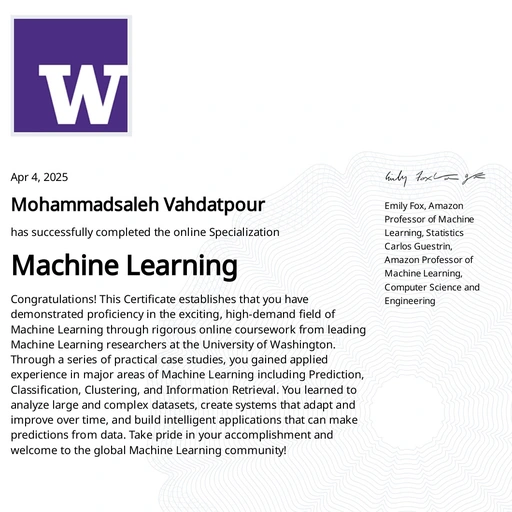
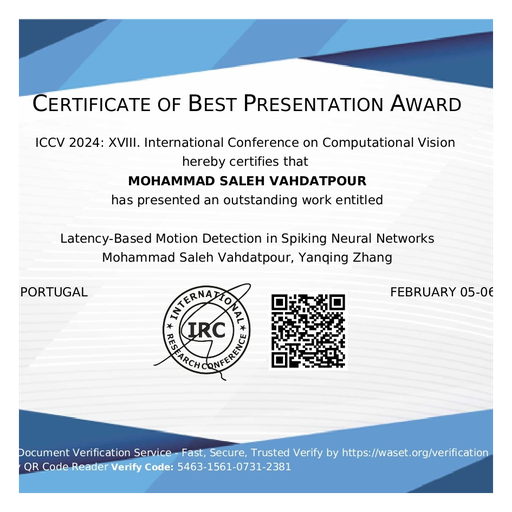

Georgia State University
Ph.D., Computer Science GPA 4.16
- Selected coursework: Advanced Machine Learning, Advanced Algorithms, Advanced Image Processing, Computational Intelligence.
AI/ML Engineer & Researcher Atlanta, GA
Ph.D. candidate in Computer Science with 8+ years of experience in AI/ML and software development. Experienced in building, testing and deploying scalable AI systems using Python, PyTorch and TensorFlow. Research focuses on generative AI, computer vision, LLMs and efficient machine learning, with peer-reviewed publications and engineering experience.
Ph.D., Computer Science GPA 4.16
M.Sc., Computer Science Ranked 1st among the class of 2017
B.Sc., Computer Science
Tressed Inc.
Georgia State University
Sequence Content Co.
University of Tehran
Artificial Intelligence Computational Intelligence Software Development
Advanced Algorithm Design Artificial Intelligence C++ Programming
Built a multimodal forecasting pipeline using CNNs, BLIP-2, and diffusion models to classify air quality from 5,000+ sky images across 10+ urban regions and visualize pollution scenarios.
Designed an agentic framework for scalable, energy-efficient LLM adaptation using FPGA-accelerated direct equation solving and incremental learning, achieving 1.6× faster adaptation with 4.7% lower energy consumption.
Developed a biologically inspired Spiking Neural Network using synaptic delays, STDP, and reinforcement learning, then evaluated temporal spike features on 1,880 signatures, detecting 98.4% of forgeries.
Built a two-stage computer vision pipeline using Fast R-CNN and CNN classification on 10,357 real-world smartphone images across 6 mosquito species, achieving 0.89 IoU and improving classification F1 from 61.2% to 76.4%.
Led a real-time computer vision and streaming ML system that analyzed facial expressions, body pose, and behavioral signals across 79+ B2C clients, enabling context-aware recommendations and up to 19% higher sales.
Built shallow and deep learning classifiers for air pollution estimation from sky images, contributing to an early visual environmental monitoring dataset and research that later evolved into multimodal air-quality forecasting.
Optimized multilayer perceptron architecture and learning parameters with genetic algorithms across 30 features and 30 generations, reaching 99.12% classification accuracy versus 97.3% for the conventional baseline.

Machine Learning Specialization
Best Presentation Award